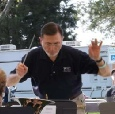
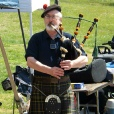

The Benfield Brass Band is a non-profit
volunteer organization which performs a number of concerts annually
in the Annapolis/Baltimore area, as well as at the annual Gettysburg
Brass Band Festival held in June each year in Gettysburg, PA. Many
of the band members play together in other local instrumental
groups, and the band has several family members playing. The band
comes together in the fall and plays through midsummer. Ray Ascione,
Conductor for the band, is a retired Navy Commander who, in his 35
years of active naval duty, served as Leader of the U.S. Naval
Academy Band and Assistant Leader of the Navy Band in Washington,
DC, among other assignments. Since retiring in the Annapolis area,
he remains active musically as a performer, educator and consultant.

The band was formed in 1998 to attend
the first Gettysburg Brass Band Festival and we have performed there
nearly every year since. The main purpose of the band is to provide
the opportunity for brass players in the area to experience playing
in a British Style brass band. Over the years the band has gradually
grown in size and skill. The band has reached a size pretty close to
the limit, but we continue to improve the quality of our playing.
BBB is not a contesting band which allows us to grow our membership
beyond the typical contesting sized British band.
